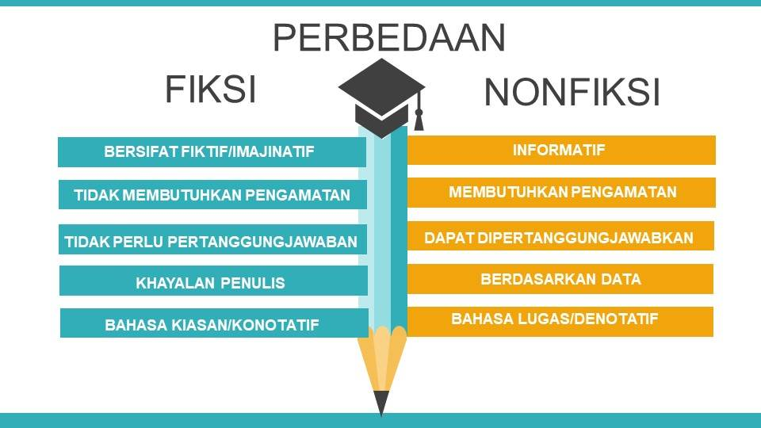

Bab-4 Perbedaan Buku Fiksi Dan Nonfiksi
Hai guys, siapa nih yang hobi baca buku? Nah, kalian sudah tahu belum kalau buku ada banyak genre-nya lho! Kalau kalian sendiri, penggemar buku genre apa nih? Novel, cerpen, biografi, dongeng, atau esai?
Tahukah kamu, buku memiliki dua genre yakni, buku fiksi dan buku nonfiksi. Sudah pada tahu belum apa perbedaan dari dua jenis buku tersebut? Kalau masih ragu, kita coba bahas secara lengkap di artikel ini, ya!
Sebelum kita masuk pembahasan tentang perbedaan buku fiksi dan nonfiksi, mari kita bahas satu persatu pengertian buku fiksi maupun nonfiksi.
Pengertian Buku Fiksi
Buku fiksi adalah buku yang berisi cerita rekaan, khayalan, atau tidak berdasarkan kenyataan. Dalam buku fiksi, ide ceritanya berasal dari khayalan atau imajinasi penulis. Buku fiksi menggunakan bahasa kiasan atau tidak bermakna sebenarnya (konotatif). Tujuannya mengajak pembaca agar seolah-olah masuk ke dalam cerita.
Oleh karena itu, penulis buku fiksi harus mampu menjelaskannya dengan baik, sehingga pembaca bisa tertarik dan seakan terbawa alur cerita. Dalam menulis cerita fiksi memang dibutuhkan pengetahuan yang luas dan daya imajinasi yang bebas.Ciri-ciri Buku Fiksi
Ciri khas utama dari buku fiksi, yakni kejadiannya merupakan bukan kisah nyata, melainkan hanya karangan fiktif. Sang penulis harus mampu menciptakan alur cerita yang sangat menarik. Alur cerita yang menarik itu ditulis berdasarkan kejadian yang tidak lazim atau terjadi di kehidupan nyata. Selain itu, terdapat ciri-ciri buku fiksi lainnya. Di antaranya sebagai berikut:
- Imajinatif
- Kebenaran Yang Relatif
- Bahasa Konotatif
- Tanpa Sistem Yang Baku
Buku fiksi bersifat imajinatif dan ditulis berdasarkan rekaan dari penulis.
Karena buku ini ditulis secara imajinatif, maka unsur benar atau salah dari buku fiksi cenderung relatif tergantung penilaian pembaca.
Dalam karangan fiksi, bahasa konotatif sangat sering digunakan oleh penulis buku fiksi. Hal ini untuk menambah imajinasi pembaca dan membuat tulisan terkesan hidup.
Jika kamu ingin bebas berekspresi dalam menulis, tulislah karangan fiksi. Buku fiksi tidak memiliki aturan yang rigid atau baku. Diksi dan gaya penulisan relatif lebih bebas.
Contoh Buku Fiksi berdasarkan Contohnya
1.Cerita Pendek (Cerpen)Cerpen atau cerita pendek adalah salah satu jenis prosa yang isi ceritanya bukan berasal dari kejadian nyata (fiksi). Contoh buku fiksi berjenis cerpen, antara lain Robohnya Surau Kami karya A.A. Navis, Nadira dan Malam Terakhir karya Leila S. Chudori, Corat-Coret Di Toiletkarya Eka Kurniawan, Tikus dan Manusia karya Jacob Sumardjo, dan masih banyak lagi.
2.NovelNovel juga merupakan karangan prosa yang berisi cerita kehidupan tokoh bergenre fiksi, namun memiliki alur yang lebih kompleks dibandingkan cerpen. Contoh buku fiksi pada kategori novel, yaitu Daun Yang Jatuh Tak Pernah Membenci Angin karya Tere Liye, Bumi Manusia karya Pramoedya Ananta Toer, Laskar Pelangi karya Andrea Hirata, Laut Bercerita karya Leila S. Chudori, dan masih banyak lagi.
3.KomikNah, kamu suka baca komik? Komik adalah cerita bergambar dalam susunan panel-panel yang berdekatan secara berurut. Contoh buku fiksi berbentuk komik, di antaranya One Piece, Naruto Shippuden, Bleach, Detective Conan, Crayon Shinchan, dan lain sebagainya.
4.Cerita BergambarSeperti namanya, cerita bergambar adalah cerita yang dilengkapi dengan gambar-gambar. Jadi, kalau cergam, isinya masih berupa cerita (teks), sedangkan komik lebih ke kumpulan gambar-gambar yang berisi cerita. Contoh buku fiksi berbentuk cergam, antara lain Kampungan Romansa, Si Cacing dan Cerita Kesayangannya, cerita bergambar dari majalah anak, dan lain sebagainya.
Pengertian Buku Nonfiksi
buku nonfiksi adalah karangan yang dibuat berdasarkan kejadian nyata, atau disusun berdasarkan fakta. Contoh buku nonfiksi yang umumnya kita ketahui, yakni esai, jurnal, karangan ilmiah atau biografi.
Buku nonfiksi bertujuan untuk memberikan informasi kepada pembaca. Dari segi persiapan menulis buku nonfiksi, penulis juga harus mempersiapkan data atau melakukan kajian fakta dan riset ilmiah terlebih dahulu. Agar karangan nonfiksi dapat bersifat objektif, dan dapat dipertanggung jawabkan secara ilmiah.
Ciri-ciri Buku Nonfiksi
- Menggunakan Bahasa Formal
- Dituliskan Berdasarkan Fakta
- Bahasa Denotatif
- Memberikan Ide Baru
Buku nonfiksi merupakan buku yang berisi kejadian sebenarnya dan bersifat informatif. Karena informatif, buku nonfiksi harus menggunakan bahasa formal, agar dapat diterima oleh pembaca dari kalangan yang berbeda-beda.
Buku nonfiksi ditulis dengan fakta sesuai kejadian yang ada. Dalam buku nonfiksi, penulis membutuhkan pengamatan dan data sebagai bahan penulisan, sehingga isi buku ini dapat dipertanggungjawabkan. Selain itu melibatkan kajian ilmiah dan riset yang memadai. Jadi, informasi dapat bersifat objektif dan sesuai apa adanya.
Buku nonfiksi menggunakan bahasa denotatif atau bermakna sebenarnya. Ide-ide ditulis secara gamblang tanpa menggunakan bahasa kiasan. Jadi pembaca dapat langsung memahami maksud dari isi buku. Oleh karena itu, buku nonfiksi sering dijadikan sumber informasi oleh para pembaca.
Buku nonfiksi ditulis dengan tujuan utama untuk memberi ide baru atau pengembangan dan menyempurnakan ide sebelumnya. Penulis buku nonfiksi juga tidak diwajibkan harus memiliki imajinasi yang kuat dalam menulis. Namun, akan jauh lebih baik, bila topik dalam karangan nonfiksi, ditulis oleh penulis yang ahli dalam bidang tersebut.
Contoh Buku Nonfiksi Berdasarkan Jenisnya
- 1.Buku Nonfiksi Murni
- 2.Buku Nonfiksi Kreatif
Buku nonfiksi murni adalah buku yang berisi tentang pengembangan berdasarkan data-data yang otentik atau pasti. Contoh buku nonfiksi murni di antaranya skripsi, karya ilmiah, laporan, makalah, tesis, desertasi, dan artikel.
Sementara itu, buku nonfiksi kreatif didapatkan dari data-data otentik yang kemudian dikembangkan berdasarkan imajinasi penulisnya. Contoh buku nonfiksi kreatif antara lain puisi dan prosa.
Perbedaan Buku Fiksi Dan Nonfiksi
Perbedaan antara buku fiksi dan nonfiksi bisa disimpulkan berdasarkan pengertian dan cirinya, yakni sebagai berikut:
Sangat jelas bukan perbedaan antara buku fiksi dan buku nonfiksi? Meskipun cerita novel, cerpen, dan dongeng merupakan cerita fiksi, namun penulis seringkali mengadopsi peristiwa-peristiwa dan fakta-fakta tertentu.
Hanya saja, tokoh dan alur ceritanya dibuat lebih menarik agar pembaca bisa terbawa pada alur ceritanya. Setelah kalian mengetahui perbedaannya
Nah, mudah bukan memahami keduanya? Ingin tahu lebih dalam tentang buku fiksi dan buku nonfiksi? Ayo segera gabung bersama tutor yang handal dan teman-teman lain se-Indonesia di Mediapintar.com!
Nah, kalau kamu ingin lebih banyak tahu soal perbedaan buku fiksi dan nonfiksi lagi? Yuk, bergabung di Mediapintar.com, kamu bisa belajar banyak hal di sana dan menjadi peneliti hebat, lho!.